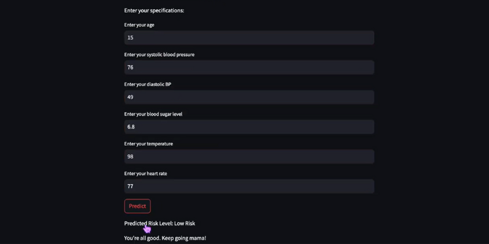

Hacklytics 2025 | Women's Health & Machine Learning
Mama Bear is a web application developed during Hacklytics 2025 to empower pregnant women with data-driven health insights. By tracking vital metrics including blood pressure, blood sugar, and heart rate. The app utilizes machine learning to categorize pregnancy risk factors, helping users make informed decisions for a stress-free pregnancy.

Our team focused on pivoting from an initial concept to a viable health-track product by identifying accessible, high-quality datasets. We mastered cross-functional integration, syncing back-end ML logic with a front-end interface across different development environments and utilized Git/GitHub for collaborative version control.
Next steps for Mama Bear include training the model on more diverse datasets to increase predictive precision and developing interactive data visualizations (graphics) to help users track their health trends throughout their pregnancy journey.